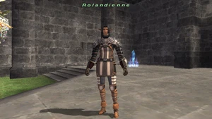

NPCs › RolandienneRolandienneFrom Zenith XI WikiRecords of Eminence and Sparks.Rolandienne — official FINAL FANTASY XI screenshot. · Image sourceNameRolandienneLocationSouthern San d’Oria (G-10)LocationSouthern San d’Oria (G-10). Records of Eminence and Sparks.What to doService and walkthrough